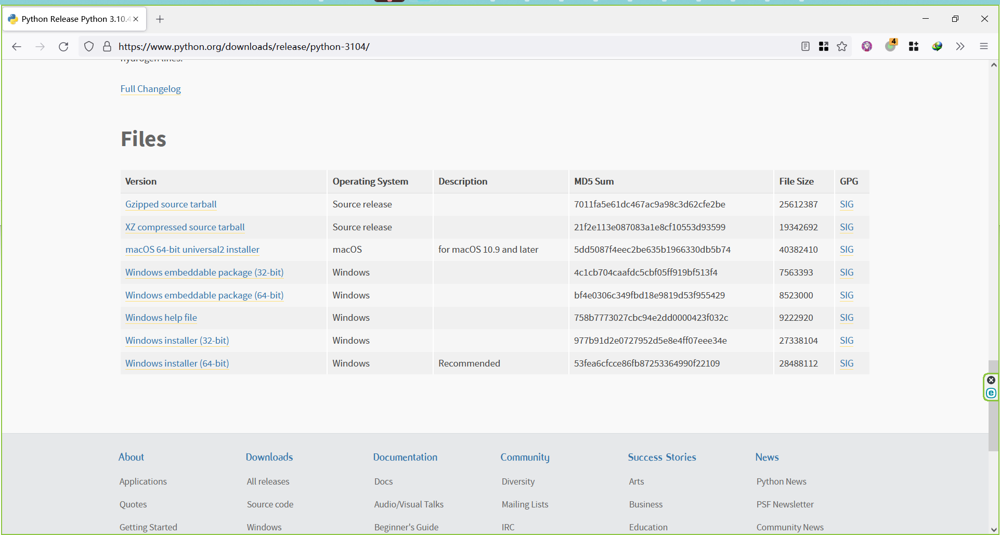
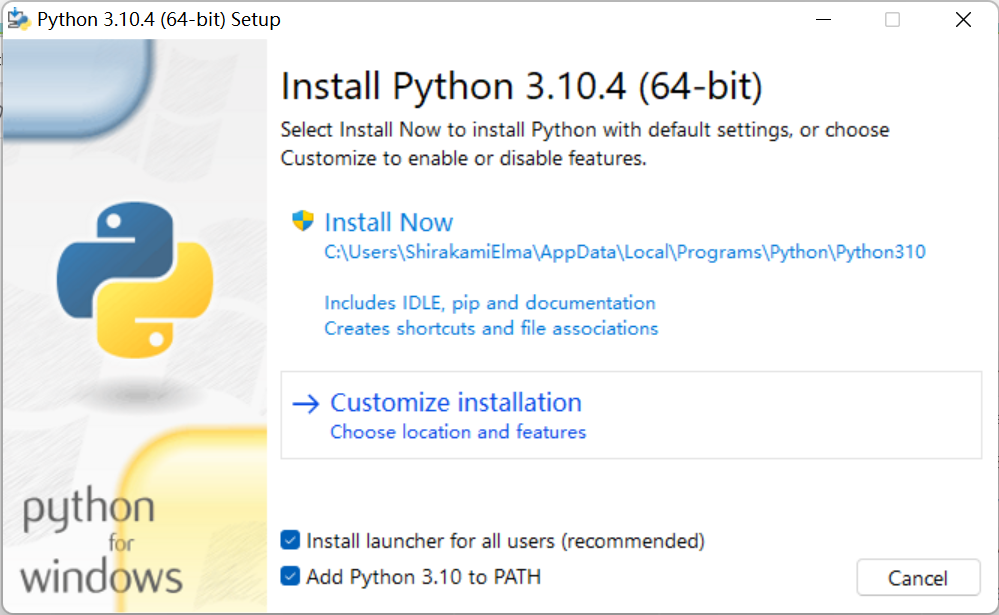
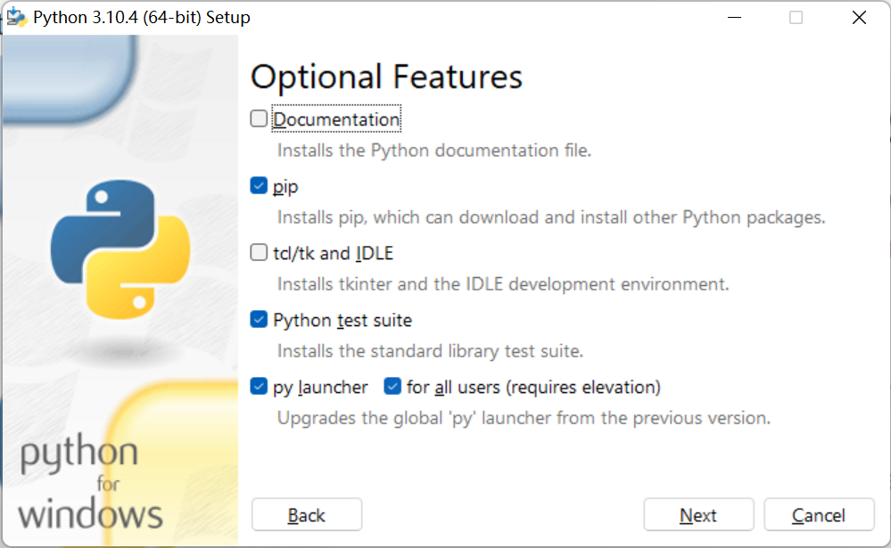
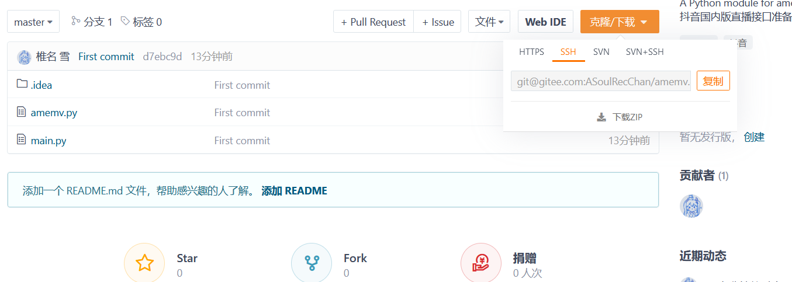
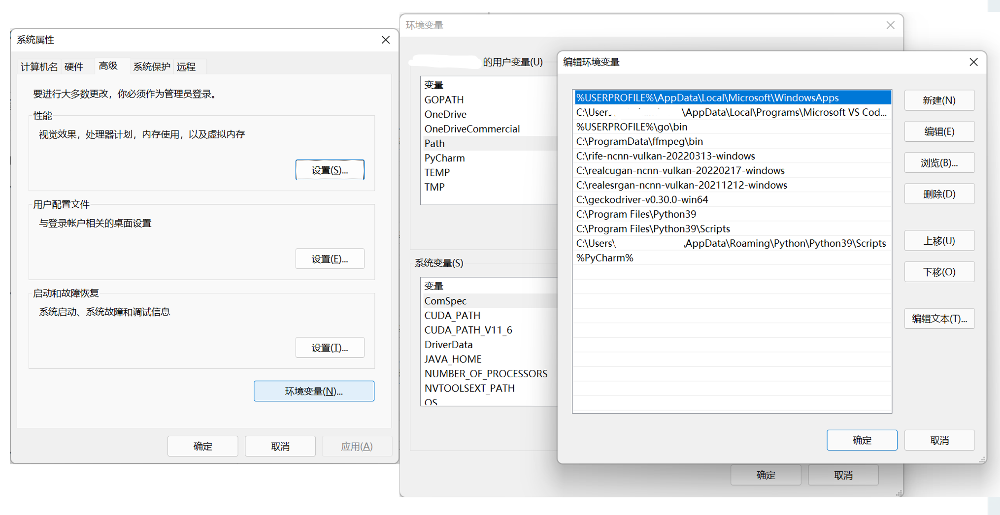
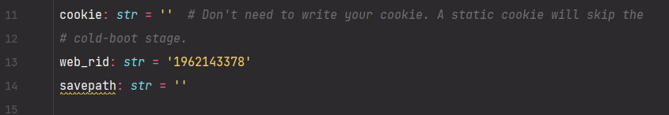

监听脚本
原理
- 使用 Python 先检测房间是否直播，如果直播就立刻录制；如果没有开播，则利用抖音开播更换
room_id的机制，等待新的room_id，如刷新视为开播。 - 使用 FFMpeg 录制。
- 使用 Selenium 调用浏览器获得 Cookies 以规避抖音后端风控。
使用
-
配置 Python 环境。
-
下载 Python

-
打开安装器，选择 Customize installation


-
一路安装完成后退出。
-
-
下载/克隆源代码

下载 ZIP 或克隆后，打开终端/Powershell，进行如下操作。
-
配置 pip 与必须软件包
python -m pip install -i https://pypi.tuna.tsinghua.edu.cn/simple --upgrade pip
pip config set global.index-url https://pypi.tuna.tsinghua.edu.cn/simple
pip install -r requirements.txt
-
配置 GeckoDriver
下载 GeckoDriver 并配置到环境变量。
搜索 环境变量 然后打开 系统属性 -> 环境变量，把存放 GeckoDriver 的目录作为新的一行添加到 用户变量 - Path 里。

-
安装 Firefox
从 这里 下载稳定版的 FireFox。
-
修改脚本
有 VSCode PyCharm 就用，没有用记事本编辑
main.py
-
savepath：请填写存储录播的经过转义的绝对路径-
Linux：
/data/amemv/ -
Windows：
C:\\Users\\AvA\\Videos\\amemv-recWindows 需要多一个反斜线
-
-
cookie：如果你能长期维护，且不需要 Selenium 帮你刷新 Cookie，你可以填入你自己的游客 Cookie。- 打开 live.douyin.com
- 按下 F12，打开控制台
- 输入
document.cookie - 输出结果粘贴到此
-
web_rid：抖音直播间链接的对外显示号码。1962143378 是五个女孩的直播间， 不需要修改。
-
-
python main.py观察输出。